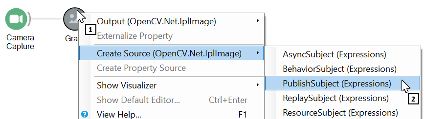
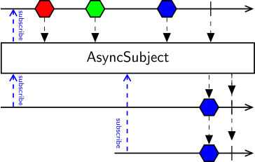
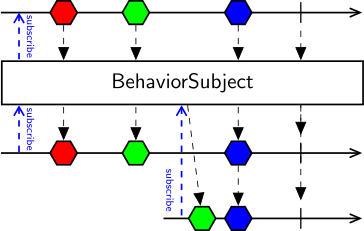
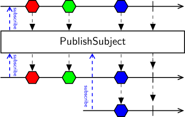
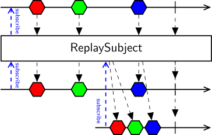
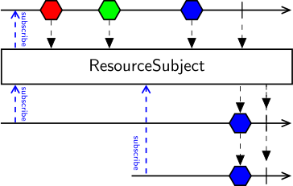

Subjects
Subjects are a special type of operator that allows reusing and sharing of observable sequences. A subject acts as a bridge or proxy; it will subscribe to an observable sequence and pass all items it receives to multiple downstream operators, allowing them to share a single subscription to the source sequence.
Most subjects will be given a name. You can subscribe to a named subject from anywhere in the workflow using the SubscribeSubject operator, making subjects very useful to organize complex workflows into modular components that can be easily replaced. The following example demonstrates how to separate logging of a sequence of images using a PublishSubject.

Finally, subjects also allow you to control the temperature of the shared sequence. You can convert a sequence from cold to hot using PublishSubject or from hot to cold using ReplaySubject.
Scope of Subjects
Subjects have a visibility scope. Any subject can be accessed in the same workflow where it is declared, or inside any workflows nested inside operators defined at the same scope level. However, if a nested operator defines their own local scope and a subject is declared inside this new scope, that subject will not be visible outside that nested workflow. The border of node groups provides a visual indication of whether a nested operator defines a new local scope.

Similarly, if node groups are used to define higher-order observable sequences, any subjects defined inside the local scope will be unique to each created sequence.
Branching Subjects
Anonymous branch points in the workflow implicitly define a PublishSubject with no name. All branches are first subscribed to the subject prior to subscribing to the common source sequence, so there is a guarantee that every value will be delivered to all branches, assuming immediate subscription.

Warning
Dangling branches operate independently from each other, and from the subscription to the source sequence. If one branch terminates and resubscribes to the source (e.g. using the Repeat operator) while other branches keep going, this will not reinitialize the shared subscription to the source. If such behavior is of interest, you will need to merge all branches together and implement the cancellation and resubscription logic downstream of the merge point.
Source Subjects
Subjects can be declared either as a sink from an existing observable sequence, or as a source. Source subjects do not have a pre-existing input sequence from which values are generated, but rather they are setup to redirect inputs from multiple writers into one reader, for example for logging or control purposes.

If subjects are created as a source, the type of the subject needs to be declared explicitly on creation. This is done by selecting the source sequence in the workflow whose type we would like to share, and using the right-click context menu.

Subject Types
Below are listed all different subject types, each represented visually by a unique icon.

The last two operators, SubscribeSubject and MulticastSubject, are used to access existing declared subjects for reading and writing, respectively. This is visually indicated by the * in the operator icon. Their behavior will be determined by the type of subject they are accessing.
AsyncSubject

AsyncSubject stores and passes the last value (and only the last value) emitted by the source sequence to each subscribed observer. The value is also only sent out after the source sequence terminates. If the source sequence does not emit any value, AsyncSubject will also terminate without emitting any values.
Tip
You can use the Take operator before AsyncSubject to store the first value from an infinite sequence.
Any observers which subscribe after the source sequence terminates will immediately receive the stored value. If the source sequence terminates with an error, AsyncSubject will not emit any values but will pass along the error notification to all observers.
BehaviorSubject

BehaviorSubject stores and passes the latest value emitted by the source sequence to each subscribed observer, and then continues to emit any subsequent values.
Any observers which subscribe later will immediately receive the latest stored value. However, if the source sequence terminates with an error, BehaviorSubject will not emit any values but will pass along the error notification to all subsequent observers.
Warning
BehaviorSubject is designed to multicast and share state updates from multiple sources, like a global variable. Because of this, even if one of the source sequences emitting values to BehaviorSubject terminates successfully, the BehaviorSubject will not send a termination message to any subscribed observers, but will remain active until the enclosing workflow scope is terminated to allow other sources to update the shared state.
PublishSubject

PublishSubject passes to each subscribed observer only the values from the source sequence which were emitted after the time of subscription.
This fire-and-forget behavior means that any observers which subscribe late might lose one or more items emitted between the time that PublishSubject was created and the time that the observer subscribed to it. If you require guaranteed delivery of all values from the source sequence, you need to ensure that all observers subscribe immediately upon workflow initialization. If this is not possible, you should consider switching to an AsyncSubject if the sequence contains a single value, or a ReplaySubject if the sequence contains multiple values.
If the source sequence terminates with an error, PublishSubject will not emit any items to subsequent observers, but will pass along the terminating error.
ReplaySubject

ReplaySubject passes to each subscribed observer all the values from the source sequence, regardless of when the observer subscribes.
Any observers which subscribe late will immediately receive all values which were sent out between the time that ReplaySubject was created and the time that the observer subscribed to it. It is also possible to parameterize the ReplaySubject to throw away old values after a certain period of time, or after a specified buffer size is exceeded.
ResourceSubject

ResourceSubject stores and passes the single last value emitted by the source sequence to each subscribed observer. The value is also only sent out after the source sequence terminates. If the source sequence does not emit any values, ResourceSubject will also complete without emitting any values.
Warning
The type of the stored value must be IDisposable. When the enclosing workflow scope is terminated, the value will be disposed to free any allocated resources, such as file or memory handles.
Any observers which subscribe after the source sequence terminates will immediately receive the stored value. If the source sequence terminates with an error, ResourceSubject will not emit any values but will pass along the error notification to all observers.
SubscribeSubject
The SubscribeSubject operator is essentially a source which accesses a subject with the specified name, at the same scope level or above, and subscribes to it. The behavior of SubscribeSubject is defined by the type of the subject which is accessed, and values from the shared underlying sequence will then be passed to any operators downstream from SubscribeSubject, as if these operators were connected to the subject directly.

Note
If the definition of the underlying subject changes, there is no need to change the SubscribeSubject as long as the name remains the same.
MulticastSubject
The MulticastSubject operator works like a sink which accesses the subject with the specified name, at the same scope level or above, and forwards any values emitted by the source sequence to the shared subject. Depending on the behavior of the subject, these values will then be passed to any operators subscribed to the subject, including any termination and error notifications.